梅吉と一緒に楽しむ花火 [梅吉]
･゜ﾟ･*:.｡..｡.:*･゜ﾟ･*:.｡. .｡.:*･゜ﾟ･*･゜ﾟ･*:.｡..｡.:*･゜ﾟ･*:.｡..｡.:*･゜ﾟ･*
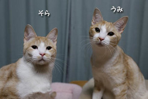
引き続きのお願いです。
猫を探しています。★拡散希望★兄弟猫脱走【千葉県我孫子市】
よろしくお願い致しますm(_ _)m
･゜ﾟ･*:.｡..｡.:*･゜ﾟ･*:.｡. .｡.:*･゜ﾟ･*･゜ﾟ･*:.｡..｡.:*･゜ﾟ･*:.｡..｡.:*･゜ﾟ･*
![[猫]](https://blog.ss-blog.jp/_images_e/101.gif) ん？
ん？
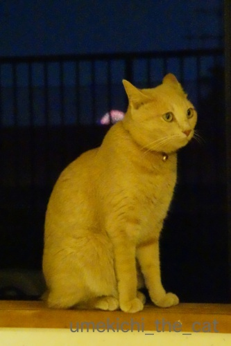
いま どーん いうたな・・・
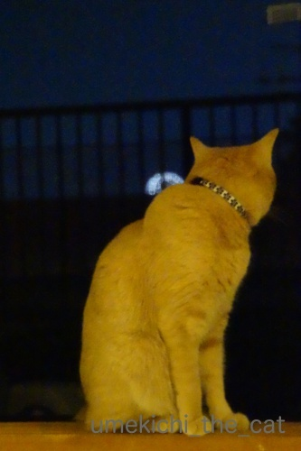
なぬ！？
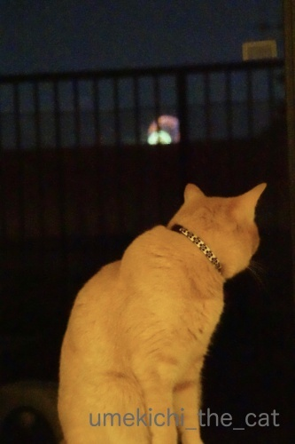
あれはー！！![[ぴかぴか（新しい）]](https://blog.ss-blog.jp/_images_e/150.gif)
先日市内で行われた花火大会。
去年まで我が家からは爪先立ちしなきゃ見られなかったんですが
遮っていた建物が取り壊された？
（そんな工事してたかなぁ・・・・・）
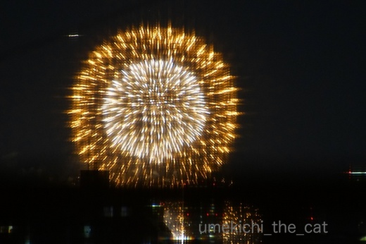
低く上がる花火はベランダの手すり越しにしか見えないのですが
高く打ち上がるとこんな感じでちゃんと見えます(≧▽≦)
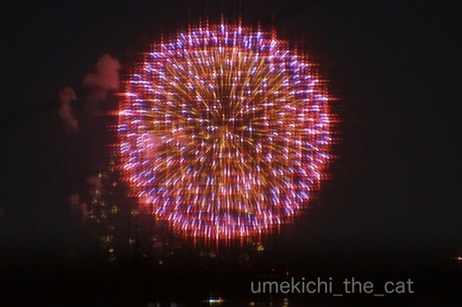
網戸越しに撮影したので妙なギザギザ感、電飾っぽく見えますが
れっきとした花火ですよ。
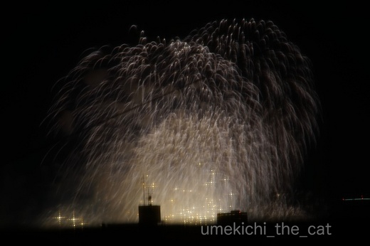
街中で見る花火なのでビルの屋根や電線がかぶりますが
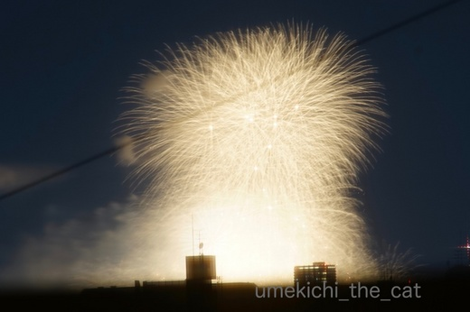
それもまた一興ということで＾＾
来年からは時間になったら椅子を用意してお酒片手に鑑賞しようっと。
（この日は外食帰りだったので私は途中で寝落ちでした(^_^;)）
梅吉はみんなが窓辺に集まっているので「なにかおるんか？」という感じで
おしっぽブンブンしながら参加してました。
花火の音も、近くでどんどん鳴るわけじゃないので
全然怖がりませんでしたよ(^_－)☆
さて、梅しごとー梅吉日記ー、来週はお盆休みとなります。
皆様のところへは遊びに伺いますが頻度は落ちるかも。
通常更新は20日からになりますのでよろしくお願い致しますm(_ _)m
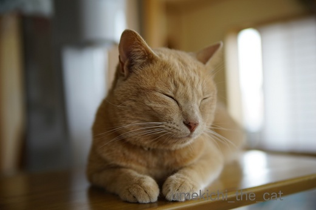
ちょっと おやすみやで
台風、残暑とまだまだ厳しい季節が続きますが
皆様ご自愛くださいませ(^_－)☆
 ↑ガブッと一押し↑
↑ガブッと一押し↑
ベッド下のアーティスト、マエストロ梅吉。
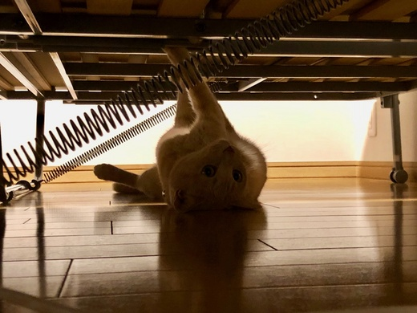
バネとベッド板を華麗に演奏します！
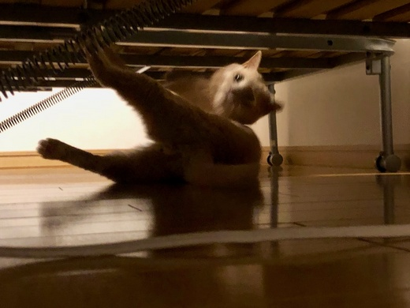
あしも使うー！？
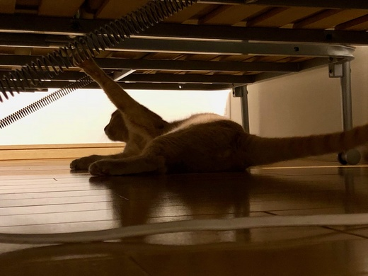
今度は手！
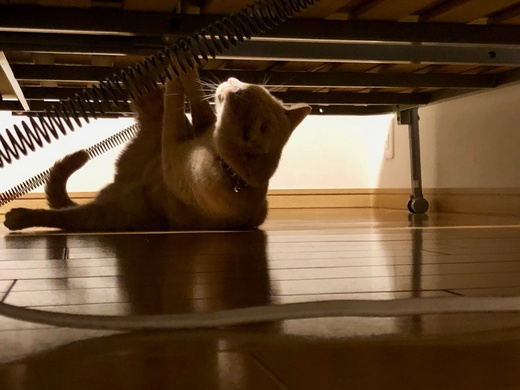
手と足両方使い！！！クライマックスが近づいて来た様です( ´艸｀)
そうそう昨日ヤマトさんとLINEでこんな会話をしたにゃ。
も〜さんが教えてくれたにゃ。
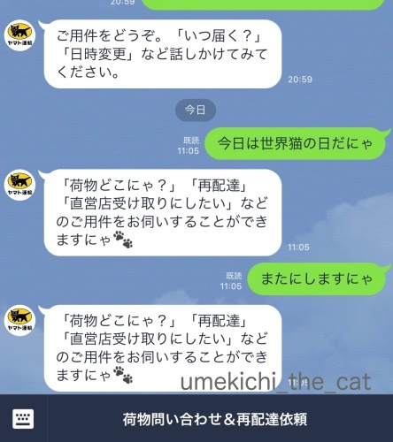
お話相手にはなってくれなかったにゃー(꒦ິ⌑꒦ີ)
ヤマト運輸のLINEは猫語が通じるんですよ。
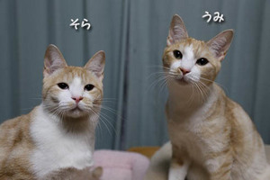
引き続きのお願いです。
猫を探しています。★拡散希望★兄弟猫脱走【千葉県我孫子市】
よろしくお願い致しますm(_ _)m
･゜ﾟ･*:.｡..｡.:*･゜ﾟ･*:.｡. .｡.:*･゜ﾟ･*･゜ﾟ･*:.｡..｡.:*･゜ﾟ･*:.｡..｡.:*･゜ﾟ･*
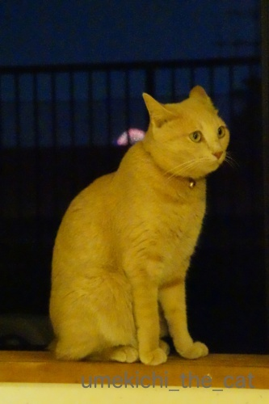
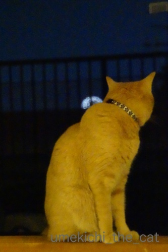
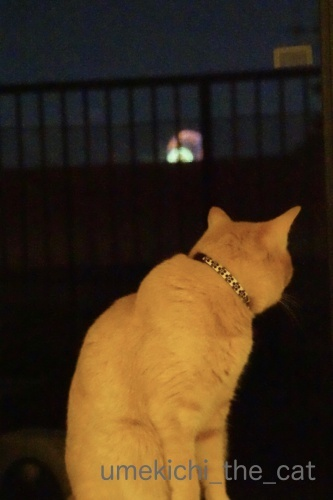
先日市内で行われた花火大会。
去年まで我が家からは爪先立ちしなきゃ見られなかったんですが
遮っていた建物が取り壊された？
（そんな工事してたかなぁ・・・・・）
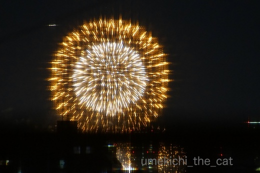
低く上がる花火はベランダの手すり越しにしか見えないのですが
高く打ち上がるとこんな感じでちゃんと見えます(≧▽≦)
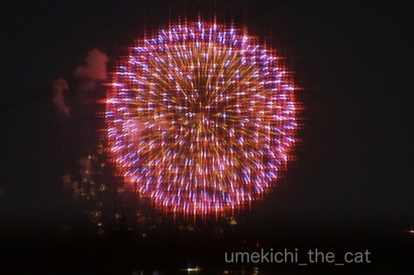
網戸越しに撮影したので妙なギザギザ感、電飾っぽく見えますが
れっきとした花火ですよ。
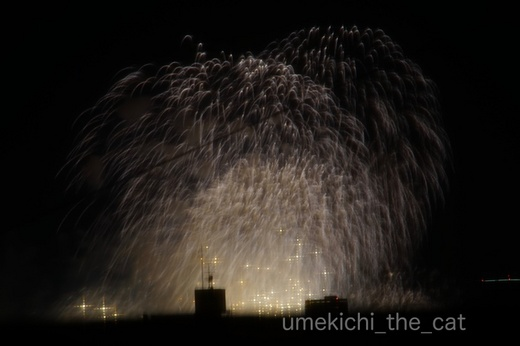
街中で見る花火なのでビルの屋根や電線がかぶりますが
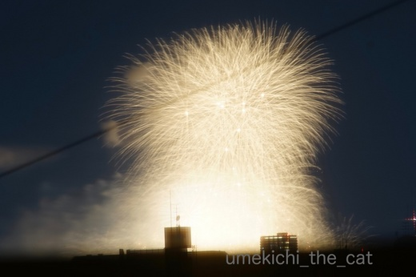
それもまた一興ということで＾＾
来年からは時間になったら椅子を用意してお酒片手に鑑賞しようっと。
（この日は外食帰りだったので私は途中で寝落ちでした(^_^;)）
梅吉はみんなが窓辺に集まっているので「なにかおるんか？」という感じで
おしっぽブンブンしながら参加してました。
花火の音も、近くでどんどん鳴るわけじゃないので
全然怖がりませんでしたよ(^_－)☆
さて、梅しごとー梅吉日記ー、来週はお盆休みとなります。
皆様のところへは遊びに伺いますが頻度は落ちるかも。
通常更新は20日からになりますのでよろしくお願い致しますm(_ _)m
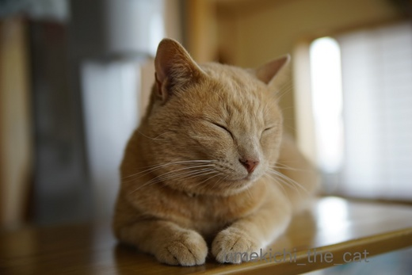
台風、残暑とまだまだ厳しい季節が続きますが
皆様ご自愛くださいませ(^_－)☆
ベッド下のアーティスト、マエストロ梅吉。
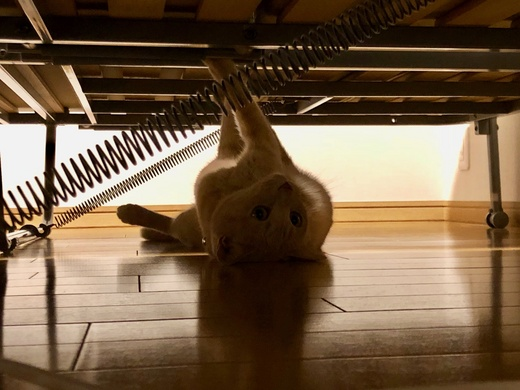
バネとベッド板を華麗に演奏します！
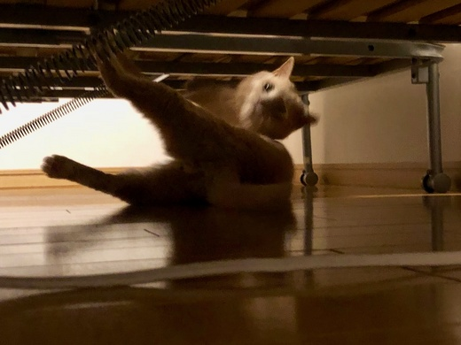
あしも使うー！？
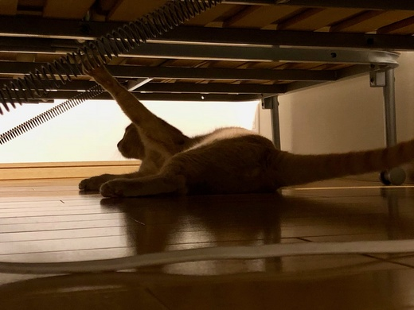
今度は手！
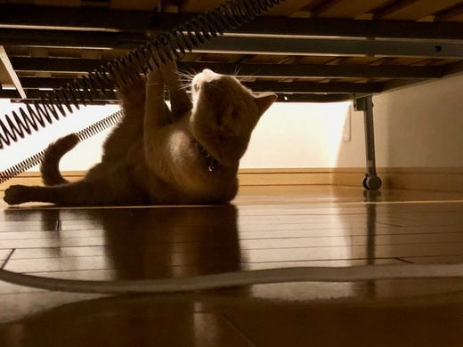
手と足両方使い！！！クライマックスが近づいて来た様です( ´艸｀)
そうそう昨日ヤマトさんとLINEでこんな会話をしたにゃ。
も〜さんが教えてくれたにゃ。
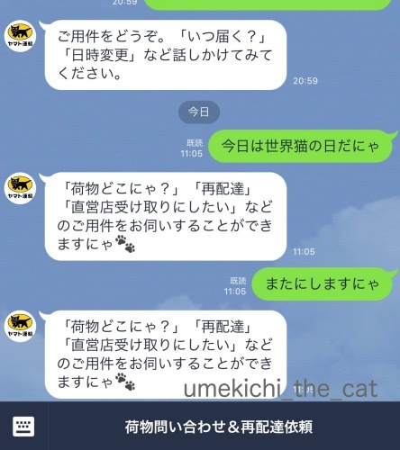
お話相手にはなってくれなかったにゃー(꒦ິ⌑꒦ີ)
ヤマト運輸のLINEは猫語が通じるんですよ。

カフェオレ色の梅吉

梅吉 2023年8月10日 永眠


梅吉と出会った譲渡会

犬猫の理由なき殺処分ゼロ
妄想広告
UMEKICHI 光

爆発的に早い！
時々攻撃的！
Thanks to Mr.Boss365
爆発的に早い！
時々攻撃的！
Thanks to Mr.Boss365

私のところは、今年の花火大会は中止に
なってしまいましたが、梅吉さんはド迫力で見られて
良かったです～♪
ベッド下の演奏会、両手足と尻尾も使ってる？
聴きに行きたいな～(´∀｀*)
by マーヤ (2018-08-09 00:46)
にゃん索協力ありがとにゃん♪
きれに楽器ひけてますねー＾＾音は見えないけど＾＾；
名曲に違いない♪
にゃにエフスキーかなぁ。。
by 猫毬 (2018-08-09 02:57)
猫語が通じるなんてすごいですね。
by ニコニコファイト (2018-08-09 06:54)
我が家もベランダから花火が見えますが、
やはり途中の建物や電線が入ってしまいます。
遮る物が無くなったんじゃなくて
マンションが成長したというのは？（爆）
by ぽちの輔 (2018-08-09 07:05)
ぽちの輔様に（ ＾ｏ＾）ノ◇ 山田く～ん 座布団１枚 ♪
梅吉様、花火の閃光で、あーゆー色なのかしら(^_^;)
仰向けでアクロバティックな演奏をする梅吉様、まさか
モーツァルトやパガニーニの生まれ変わりなのか(^^)
by middrinn (2018-08-09 07:37)
おぉ～♪梅吉さん越しに花火♪
それが一番楽しいかもしれませんね(#^.^#)
お盆休み！
暑さが厳しいと思いますので
体調には気を付けて
楽しんでくださいね♪
by きぃ (2018-08-09 07:57)
さすが梅吉さん、花火の音にも動じず家族と一緒に
美しい花火を鑑賞できるなんてうらやましい( ^ω^ )
うちはノエルが音に敏感なので
遠い場所での打ち上げ花火の音にも唸ります(⌒-⌒; )
で、皆の耳がイカ耳に( T_T)
お盆休み、ゆっくり楽しんでくださいね♪( ´▽｀)
by ニッキー (2018-08-09 08:12)
家から花火見えるなんて最高ですね。
さて、ヤマト運輸。こんな対応ができるなんて、
流石はネコを看板に掲げる会社！（≧∇≦）
by よーちゃん (2018-08-09 08:22)
おはようございます。
自宅ベランダから花火が見える良いですね！！
梅吉君の「振り向けば花火」写真と「なぬ！？」はナイスです！！
マエストロ梅吉君！！足まで使う？全身で演奏！！
腕を上げました？改め、足を上げました？？ですね！！
残暑厳しいと思いますが、お盆休みを穏やかにお過ごし下さい！？(=^･ｪ･^=)
by Boss365 (2018-08-09 10:12)
ねこちゃんたちのそれぞれの運命を考えると・・・苦しくなるのです。。。
すべての命が守られ、健やかに過ごせますように！！！
by Ginger (2018-08-09 11:38)
梅吉くんの背中に羽が？と思ったら！！
花火だったのですね～。なんて可愛らしい(≧▽≦)
ちぃさんは、途中寝落ち・・・。
写真は旦那様が撮ってくれたのかな？
ベッドの下の梅吉くんは、写真の色合いなのかな？大演奏家の演奏会みたい！
音色のぼよよよ～～～んが心に響きます(*^-^*)
来週からお盆休みなのね。暑いけど楽しい休暇をお過ごしください。
引き続きご協力ありがとう。感謝してます。
by emi (2018-08-09 11:50)
花火、こんなにキレイに見えるんですね！
かなりド～ン、ド～ンと音が聞こえましたが、目の前にある30階建てのマンションが立ちはだかっているので何も見えず・・・。
テレビ大阪の中継を見ながらビール飲みました♪
梅吉さんの華麗な演奏で目覚める朝はしあわせだ～(^▽^;)
タンバリンかカスタネットを置いたらリズムセクションも加わってさらに賑やかに？！
お盆は猫父ず～っと休みですが、猫母飛び石で仕事。いつも中途半端なお盆休みです^^;
by ゆきち (2018-08-09 12:29)
花火が見えるの羨ましいです~。梅吉さんも一緒なのが良いですね。
バネ演奏は動画が撮れましたでしょうか? こちらも楽しみにしておりまーす。
by zombiekong (2018-08-09 12:51)
窓越しに花火は素敵ですね～！
花火と言えば、親戚が遊びに来たときに庭先でやる花火くらいです。
でも、家の奥さんは仕事？で大曲に花火に毎年行っているので羨ましく思ってます(^_^;)
by kou (2018-08-09 18:24)
梅吉さん、花火を冷静に見ていますね！
音とかも大丈夫なのですね(^^)
脱走ニャンコ見つかると良いですね。
by ma2ma2 (2018-08-09 19:15)
花火、部屋にいながら見えるとは良いですね〜
来年は色々揃えて（飲んだり飲んだりで）楽しみでしょうね。
世間はお盆休み、楽しんでください。
by kiki (2018-08-09 20:57)
網戸越しの花火、十字に輝くクロスフィルタを使用されたのかと思いました。^^)
ベッド下の演奏、びよーん、びよーんって感じなのかなあ。^^;
ヤマトとLINEでコミュニケーションが出来ること自体知りませんでした。。。
by yes_hama (2018-08-09 22:11)
まだ今年は花火を見てないです。
夏休みになったら、見に行こうかなあと思っています。
ゆっくり休んでくださいね(^^)
by riverwalk (2018-08-09 22:48)
花火、しっかり見えていますね！
建物が建たないうちに次回花火を行って欲しいですね^^;
マエストロ、かっこいい！（ ゜∀ ゜）
ヤマトさん、、先日ウニを指定日に届けてくれませんでした・・・でした・・・
お盆ですね。ごゆるりとお休みくださいませ。
by Ja-Kou66 (2018-08-09 23:51)
え！！先週のあの花火が梅吉様のご自宅から鑑賞出来るとな！！(*ﾟ▽ﾟ*)
何と素晴らしい♪あんな混雑の中行かなくても冷えたビールを片手に梅吉様を愛でながら、おおよその花火鑑賞気分が味わえるなんて…
来年は行っちゃおうかしらん٩( ᐛ )و♪
梅吉様と花火、芸術的ですわ！！
そしてダンサーでもありミュージシャンでもあられる…沢山の才能をお持ちで益々惚れちゃう♡
by くつしたにゃん (2018-08-10 09:01)
自宅から花火が見えるなんてなんていい環境。羨ましいでございます(*'ω'*)
も～さんのブログ見て私もすぐヤマトのライン登録しました。でもそんな時に限ってヤマト便での配達がない…早く使いたい!(^^)!
by palpal (2018-08-10 14:44)
梅吉さん越しの花火とは、なんと乙な＾＾
怖がらないんですね～。
おやすみやで、のお顔、すてき～看板猫さん＾＾
ベッド下の演奏はびよよよよよん♪なんですね～＾＾
by sana (2018-08-10 17:16)
花火を眺める梅吉くん…
8月のカレンダーに使えるかも！！(^^)
ヤマトのLINE、
おわりにゃ と打つと一応の区切りはつきます^^;
by も〜 (2018-08-10 23:40)
色々とありがとですー＾＾＠
ご進言どーり、腰据えていきます。
主さんから正確な情報が入らないとどーも動きにくいっす＾＾
お盆休みごゆるりとー＾＾＠
改めまして、感謝感謝です♪
by 猫毬 (2018-08-11 00:26)
マーヤさん＞
ここ数年、花火大会が中止になっちゃうことも多いですよね！
我が家は蒸し暑ーい夜に日本情緒たっぷり
梅吉と一緒に花火を楽しむことができましたよ＾＾
演奏会は早朝、ゲリラ的に開催です！
開演１分前にお知らせしますのでよろしくー(≧▽≦)
猫鞠さん＞
転載しただけで力を添えられたかどうか・・・
主さんも色々な感情がないまぜになっていそうです。
でも、たくさんの方が拡散してくれたので
にゃんこが発見されたらその後の成り行き
ソネブロ中が大注目、になるかもねー＾＾
おとは まちがいなくとどいてるにゃ by梅吉
ニコニコファイトさん＞
ヤマトさん、やりますよねーＯ(≧▽≦)Ｏ
ぽちの輔さん＞
我が家からも上限の座布団三枚♪
ってことは、数年後にはうちのマンションは
タワマンになるんですよねぇ・・・
資産価値は上がるのかしら（爆）
middrinnさん＞
ぽちの輔さんは座布団合計４枚ゲットですw
梅吉がビミョーな色をしているのは
花火を見るのに部屋の電気を消しているからなんです。
梅吉の毛色は照明ですごく変わっちゃいます。
バネ演奏家としてマスターピースを残す日も近いでしょうか・・・
きぃさん＞
梅吉と花火を同時に鑑賞、一年に一度の楽しみになりそうです♪
お盆中も元気に過ごしたいと思いまーす。
お気遣いありがとうございます＾＾
ニッキーさん＞
多少イカ耳の梅吉でしたがビクついている様子は
まったくありませんでした＾＾
風向きのおかげか音がそう大きくなかったのも
良かったのかもしれません。
ノエルさんの恐怖？お怒り？？がみなにゃんに
移ってしまうのですね・・・
でもゴッドマザー様がいらっしゃるから皆にゃん安心ですね！
お盆休みはちらっと帰省して楽しんで来ます(≧▽≦)
よーちゃん＞
来年はベランダで焼肉なんかしちゃおうかしら・・・
ってこの時期は暑くて無理ですけどw
ヤマトのLINE評判いいみたいですよ！
ってコクヨさんのは・・・
あ、オサレなデザイン・アワードのLINEがあるのですね！！
フォローしちゃうよー。
Boss365さん＞
梅吉と一緒に見る花火は最高でしたよ♪
怖がるかな、と思いましたが気にしちゃいませんでした。
地震のトラウマからはすっかり脱したようです＾＾
バネ演奏家の梅吉は全身で演奏する
パフォーマンス重視の奏法になって来た？ブログ映え意識！？
お盆は札幌でわたわたと過ごして来て
大阪に帰って来てからゆっくりしたいと思ってます(^_－)☆
Gingerさん＞
にゃんこの運命は巡り合った人間に大きく左右されちゃいますね・・・
少なくとも家族として受け入れたからには
責任を持って飼って欲しいです。。。
飼えなくなってしまったら行き先を探すことも含めて。。。
emiさん＞
そう言われて見ると小さな羽が生えて来ているみたいな？
エンジェル・梅吉(*>艸<)あ、堕天使かなw
私は梅吉専門写真家なので花火の写真はおっとの撮影です。
ちゃんと見えたので途中から三脚持ち出して
熱心に撮影してましたよー(≧▽≦)
お盆中は一泊ですけど札幌に帰って涼んでこようと思ってます。
でも、梅吉が心配だから一泊( ´艸｀)
にゃんこ探しは長期戦になるかな。
ぽちさんにも無理しないでねとお伝えくださいm(_ _)m
ゆきちさん＞
えΣ(ﾟ◇ﾟ；)テレビ中継していたのですか！
たまにはちゃんとテレビ欄を見ないとダメだなぁ・・・
画面で花火、音は生、なかなか臨場感のある花火が
楽しめたのではないでしょうか＾＾
梅吉の演奏で迎える朝は笑いから始まってよろしいのですが
もう少し時間を遅くして欲しいところなんですけど(-_-メ)
リズムセクション、二度寝阻止ですねwww
zombiekongさん＞
去年は爪先立ちしてふくらはぎの限界まで（１分くらい？）
しか見ていなかった花火ですが
今年は寝落ちするまでの10〜１５分くらい楽しみましたよ＾＾
もちろん梅吉も私と一緒に寝落ちですwww
バネ演奏、動画はなかなかハードルが高いでーす(-_-メ)
kouさん＞
打ち上げ花火も良いですが手持ちの花火も良いですねー＾＾
線香花火とか地味なのが好きでした。
もう何年やってないだろう・・・・
お仕事で大曲！？
奥様、花火師ですか？( ´艸｀)
ma2ma2さん＞
花火は風向きもあったのか
あまり大きな音じゃなかったのが良かったようです。
イカ耳にはなってましたけどw
脱走にゃんこ、
どなたか猫好きな方の家で元気でいてくれればいいなって
思っています＾＾
kikiさん＞
はい＾＾来年は簡単なご飯を用意して（ここ重要）
窓辺に席をしつらえて楽しみたいと思ってます！
お盆はちらっと帰省して、とっとと帰って来て（笑）
あとは梅吉とゆっくり過ごします。
この時期は家にいるのが一番ですよね＾＾
yes_hamaさん＞
クロスフィルタ・・・ググって見ました。
おお！こんなのがあるからあのキラキラのイルミネーションに
なるのですねー。
花火も綺麗に撮れてるし。
うちの網戸は、もっとちゃんと掃除したら
もっと効果を生んでくれるでしょうか(⌒_⌒;
ヤマトのLINE、アズ氏とお話ししているような気分になれるかも♪
riverwalkさん＞
やっぱ年に一度くらいは花火を見たいですよねー＾＾
良い大会がありますように！
お盆休みは帰省した後大阪でゆっくりしたいと思っています。
（帰省はゆっくり出来た事がナイ(^_^;)）
Ja-Kou66さん＞
今年はふくらはぎの限界にチャレンジせずに済みました＾＾
そう！来年はお酒片手に、なんて言ってますが
見えなくなっている可能性も・・・
マンションが成長した説もあるのでどうなることやら、です (｡-_-｡)
ヤマトさん、猫語でクレームしたらどうなるんだろう・・・
ねこ様だからにゃ、の返答は炎上！？
お盆は帰省して大阪に帰ってから梅吉とゆっくりしまーす。
くつしたにゃんさん＞
今年はなんだかちゃんと見えたんですよ！花火！！
また遮るような建物が建っちゃうかなぁ・・・
マンションが成長しているからwなんて
心強い（笑）コメントもいただきましたけど(*>艸<)
来年どうなっていることやらです。
ベッド下のアーティスト、今後はどの方向に成長していくんでしょう。
今朝は演奏家ではなく武闘家になって
寝ている私の素足に組みついて来てましたwww
palpalさん＞
今後視界を遮る建物が建たなきゃ良いなぁ・・・
猫語でLINEがしたくて（そればっかりじゃないけど）
アカウント作っちゃいましたよー！
そのうち梅吉スタンプも作るよー(๑˃̵ᴗ˂̵)و
sanaさん＞
花火見、猫見一緒に楽しめましたー＾＾
梅吉は高く上がってぴかぴかする花火には多少興味があったようですが
すぐに飽きてしまって・・・
ま、怖がらなくて良かったです！
「おやすみやで」の梅吉のこの表情
先日打ち合わせに来たシッターさんに
「仏のようだw」と褒められました(*>艸<)
も〜さん＞
おお！来年のカレンダー応募に使ってみようかしら・・・
おわりにゃ、で良いんですねー。
さよにゃら、はダメそうですよね (⌒_⌒;
by ちぃ (2018-08-11 11:19)
自宅から、こんなに大迫力の花火見物♪ うらやましい〜♪
ベッド下の梅吉さんの、すばらしい演奏ぶりに感動(;O;)
by のらん (2018-08-11 11:33)
すごくきれいに見えるんですね~＆撮れてますね。
いい夏すごせそう。
網戸越しの写真が面白いです。
ゆっくり、お盆休みをお過ごしくださいませ。
by ふにゃいの (2018-08-11 11:48)
こんにちは＾＾
お家からバッチリ花火が見えちゃうのって贅沢ですね＾＾
いいな～、いいな～。
うちは前のお家が離れてはいるんだけど、ちょっと屋根で花火が隠れちゃうんですwww.
なので、うらやましいですよーーー！！！
ベットの下で梅吉ちゃん、超絶技巧名演ですね。
これを撮られたということは、かなりの低姿勢であったと＾＾；
じっくり型ですね、カメラマンさん。
ブログ夏休み、お元気でお過ごしください(*^^)v
by ake_i (2018-08-12 13:12)
のらんさん＞
はい＾＾多少障害物はありますが
去年までの根性入れて爪先立ちして足がつりそうになるのに比べたら
素晴らしい見物環境になりました！
梅吉の名演奏はいつか音付きでお届けしたいです＾＾
ふにゃいのさん＞
暑くてぐんにゃりした毎日でしたが
花火で納涼、でした＾＾
お盆休み中は一泊で帰省しますが
私にはなぜか帰省は疲れるもので・・・(⌒_⌒;
大阪に帰ってからゆっくりしまーす。
ake_iさん＞
今年はなぜか（笑）爪先立ちしなくても
ちゃんと見えるようになってました＾＾
来年からは準備万端整えて花火見物しようと思ってます！
もしかしたらまた視界を遮られてるかもしれないけどw
ベッド下の演奏会はベッドの上から下を覗き込んで
撮影したと思われます（撮影者、おっと）
お年頃ゆえ（www）頭に血が上ってしまうのが気がかりでーす( ´艸｀)
お盆休みは普段手をつけられないあれこれ・・・・
出来るんだろうか・・・やる気になるんだろうか・・・
まずは帰省してそれから考えまーす！！
by ちぃ (2018-08-12 15:49)
お部屋からここまで綺麗に花火が見られるのはいいですね！！
お盆休み、じっくり楽しんで下さいね^^
ヤマト運輸、猫語の会話が出来たらいいのに！
もっと頑張ってもらわないとですよね(笑)
梅吉君、ブログ夏休みのあいだも
写真はたくさん撮って貰ってね^^
by リュカ (2018-08-12 16:32)
リュカさん＞
そうなのー！花火はなんか綺麗に見られるようになってたw
来年からは涼しいお家から鑑賞できる、かな？
視界を遮るような建物が立たないことを願います(^_^;)
ヤマトLINEは評判いいみたいなので
もうちょっと良いAIを導入してほしいわ！
siriレベルの、出来ないかなぁ・・・
お盆休み、札幌で一泊したらあとは特に予定はありません。
梅吉といっぱい遊んでブログネタ作らなきゃwww
リュカさんははなまるすすきの店ね。
私は北口店に行くよー！
by ちぃ (2018-08-12 21:28)
自宅から見える花火は最高ですね！
我が家も遠〜くに見えるんですが、
残念ながら、その手前の建物でほぼ雲隠れ。
ビルの背後から溢れる花火を、目を皿のようにして見つめ、
これは大きいのかぁ？と、連想ゲーム状態になってますw
1枚目と2枚目の写真の梅吉さん。
背中で打ち上がる花火が、天使の羽のようですよー(^ ^)
そしてヤマトさん。素晴らしい！やるなぁーー！！！
by morichan (2018-08-13 17:42)
人混みや蚊に刺される心配も無く、
梅吉さんと花火を見放題とは、最高！
「ベッド下のマエストロ」のしなやかな
筋肉は伊達ではないですね♫
日頃から隙間時間に鍛えていらっしゃる・・
「三つ指ついてご挨拶」の画像にもnice！
の乱れ打ちを押させて頂きます(*^O^*)。
by うりくま (2018-08-14 00:14)
morichanさん＞
想像花火、イマジネーションを鍛えるには良いかもしれませんねー＾＾
私ならいつも同じ花火になっちゃいそうw
我が家は去年まで爪先立ちして観ていたので
体力勝負でしたが今年は綺麗に見えてびっくりでした！
ヤマトさんにはもっと頑張っていろんな会話ができる様になって欲しいです！
うりくまさん＞
そうそう＾＾
私は人一倍蚊に刺されやすいので（しかも痒みが引くまで時間がかかる）
お家の中からで見る花火は最高でーす＾＾
寝落ちも自由自在だしw
うりくまさんが訪れた素敵な森のカフェ記事、拝見しました！
それ以来ずーっと「森のクマさん」が頭の中をぐるぐる・・・
どうしてもこれを伝えたくて。スッキリしました♡
センスの良い森のカフェいいなぁ・・・
by ちぃ (2018-08-15 21:16)
花火綺麗だね。
今年は花火の音すら聞いてません（ﾟ□ﾟ）
by 英ちゃん (2018-08-16 00:09)
咳コンコン昨日から再発？節々が痛い・・・・。
まあ～なんとかなるでしょ！
by ニコニコファイト (2018-08-16 06:58)
こんにちは。
帰省・帰宅お疲れ様でした？？（⌒ー⌒）
機内で「ニヤニヤ」して頂き感謝です。
すももの子猫時代の写真は少なく、ピンボケ・見苦しさはありますが・・・
小生には貴重な記憶です。すももトボけた顔してますが、結構・気性が荒いです。
小生は慣れましたが、初めて接する人は怖がります？数回程度・面談？すると慣れます。
梅吉君？大丈夫でしたか？次回ブログ楽しみにしています！？(=^･ｪ･^=)
by Boss365 (2018-08-16 12:08)
英ちゃんさん＞
テレビで花火中継、はいかがでしょう＾＾
臨場感に欠けますかw
ニコニコファイトさん＞
大事には至ってないようですねー＾＾
でも夏風邪は長引くことが多いので
油断されませんようにm(_ _)m
Boss365さん＞
一泊予定ギュウギュウの帰省はなかなか疲れましたー。
２日ぐらい疲れが取れなくて回復力が遅くなったなぁと実感しましたw
気性の荒い猫は慣れっこです！全然怖くないしw
そんなにゃんこと仲良くなれたら喜びも大きいってものです(^_－)☆
梅吉は元気にシッターさんの足にかじりついていたようですよ。
シッターさんも「次回また梅吉くんにかじられるのを楽しみにしてますw」って
言ってくれました( ´艸｀)
by ちぃ (2018-08-18 08:14)
梅吉さんえらいねー
うちも花火見えるんですが、猫らはびーくびくしてますよ。
by じゅらまろ (2018-08-18 18:20)
じゅらまろさん＞
あらら、
それは一年一度のまろたんとティマさん受難の時期だねw
by ちぃ (2018-08-20 17:59)